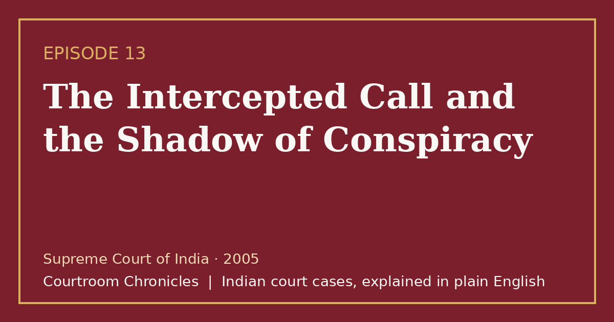

Episode 13 · 2026-10-27 · Parliament attack case
The Intercepted Call and the Shadow of Conspiracy
When a university lecturer is sentenced to death based on an intercepted phone call, appellate courts expose a flawed translation and redefine electronic evidence.

Listen
- Court
- Supreme Court of India
- Year
- 2005
- Legal Question
- Whether an unverified audio wiretap translation can sustain a capital conviction for conspiracy
- Key Forensic Evidence
- Audio cassette recording of phone call proven to be mistranslated and innocuous
Key takeaways
- Criminal conspiracy requires concrete proof of an agreement to commit the crime, which cannot be established by mere social acquaintance.
- Police translations of intercepted wiretaps must be strictly scrutinized and authenticated by independent linguistic experts.
- Confessions given by co-accused while in police custody have zero substantive evidentiary value against other co-accused.
- Even amidst immense public outrage following national security tragedies, judicial findings must rest strictly on verified legal evidence.
The case in brief
Following an armed suicide assault on the national parliament by five gunmen, security agencies initiated an intensive telecommunications investigation to uncover conspiratorial links. Within seventy-two hours, investigators arrested four individuals, including a college lecturer of language literature who was alleged to be the intellectual handler of the suicide squad. The primary evidence presented against the academic was an intercepted two-minute telephone conversation recorded on an audio cassette shortly after the attack.
The prosecution submitted a typewritten Hindi transcript asserting that the lecturer had spoken in a regional dialect rejoicing in the violent assault. Relying heavily on this intercepted audio and co-accused confessions recorded under anti-terror legislation, the special trial court convicted the lecturer of waging war and criminal conspiracy, sentencing him to death by hanging. However, the trial court had failed to independently verify the authenticity of the translation against the original recording.
On appeal, defense advocates demonstrated through certified linguistic experts that the police translation was fundamentally inaccurate and misleading. When accurately transcribed, the conversation revealed merely routine inquiries regarding family safety in the home province, containing zero references to the assault or celebration of violence. The high court reversed the conviction, and the Supreme Court of India unanimously affirmed the acquittal, holding that suspicion, however grave during national crises, cannot substitute for legal proof.
The Supreme Court ruled that confessions made by co-accused to police officers under special anti-terrorism laws cannot be used as substantive evidence against non-confessing co-accused. The judgment also addressed the admissibility of electronic records and telecom call detail printouts, setting in motion the modern legal requirement for strict statutory authentication certificates. The decision established an enduring benchmark that criminal liability cannot be imposed on the basis of unverified surveillance transcripts.
Timeline
- The Attack and Interception
Gunmen attack parliament, and police record an intercepted phone call of a university lecturer.
- Arrest of the Lecturer
The language lecturer is arrested at his residence based on cellular call records and surveillance.
- Trial Court Death Sentence
The designated special court sentences the lecturer and two others to death under anti-terror laws.
- High Court Acquittal
The high court discovers the wiretap was mistranslated and acquits the lecturer unconditionally.
- Supreme Court Final Ruling
The Supreme Court affirms the acquittal, establishing crucial guidelines on electronic evidence and conspiracy.
What the court decided
The Supreme Court of India dismissed the state's appeal against the lecturer's acquittal, setting aside all charges against him while upholding convictions of core participants.
Key holdings
- A charge of criminal conspiracy requires clear and cogent evidence of agreement to commit the unlawful act, which cannot be inferred from ambiguous telephone contacts.
- A police confession recorded under special anti-terror legislation is inadmissible as substantive evidence against a co-accused in a joint trial.
- An unauthenticated or disputed translation of an intercepted telephonic recording cannot be relied upon to deprive a citizen of life or personal liberty.
- Secondary evidence of electronic records must satisfy statutory standards of system authenticity and reliability before admission in criminal trials.
Legal principles
Strict Proof of Criminal Conspiracy
To convict an accused of conspiracy, the prosecution must establish an explicit agreement to commit the specific unlawful act, not merely casual association or acquaintance.
In this case: The court held that occasional phone contact between the lecturer and the primary accused failed to prove agreement to attack the parliament.
Inadmissibility of Co-Accused Confessions Against Others
A confession made to police by an accused cannot form the substantive basis to convict a co-accused who did not confess.
In this case: The court held that confessions of co-accused recorded under anti-terror provisions could not be used to build a case against the non-confessing lecturer.
Rule of Rigorous Electronic Authentication
Electronic records, such as wiretaps and computer-generated call logs, require strict procedural verification to eliminate risks of tampering and mistranslation.
In this case: The exposure of the fabricated regional translation established the absolute necessity for rigorous judicial scrutiny of electronic surveillance evidence.
The law then and now
The attack occurred in December 2001, and the trial and appeals were conducted under the Indian Penal Code, 1860, the Code of Criminal Procedure, 1973, the Indian Evidence Act, 1872, and the Prevention of Terrorism Act, 2002. The new criminal codes (Bharatiya Nyaya Sanhita, Bharatiya Nagarik Suraksha Sanhita, and Bharatiya Sakshya Adhiniyam) took effect on 1 July 2024 and apply prospectively.
Left: the law applied to this case. Right: the matching provision today (the new criminal codes apply only to offences on or after 1 July 2024).
Consolidated the definition and punishment of criminal conspiracy into Section 61. See all 6 episodes on this provision →
- Indian Penal Code, 1860Section 121Waging, or attempting to wage war, or abetting waging of war, against the Government of IndiaBharatiya Nyaya Sanhita, 2023Section 147Waging, or attempting to wage war, or abetting waging of war, against Government of India
Substantially unchanged offence covering armed attacks against the State under Chapter VII.
Re-enacted with modernized provisions governing the admissibility and certification of electronic records.